נעים מאוד, אני שרה בן אהרון, מטפלת בבעיות כף רגל בקליניקה שלי במושב רמת רזיאל, ומתמחה בטיפול בציפורן חודרנית ובאורטונקסיה.
"דחיתי את זה כי הייתי בטוח שיכאב לי".
את המשפט הזה אני שומעת כמעט מכל מי שמגיע אליי עם ציפורן חודרנית וכאבים חזקים. אני מבינה לגמרי את החשש, ולכן חשוב לי להרגיע: הטיפול אולי מלווה במעט אי-נעימות, אבל אני כאן כדי להעניק לך טיפול סבלני, עדין, ולהיות קשובה לכל תחושה שלך.
מה שבאמת כואב – זו ההמתנה. ציפורן שחודרת לעור מביאה איתה דלקת חריפה, ובעיה קטנה הופכת לכאב גדול שדורש יותר התערבות. אני מזמינה אתך להגיע אליי, למרחב בטוח ומרגיע, כדי לטפל בזה עכשיו ולחסוך לך סבל מיותר.
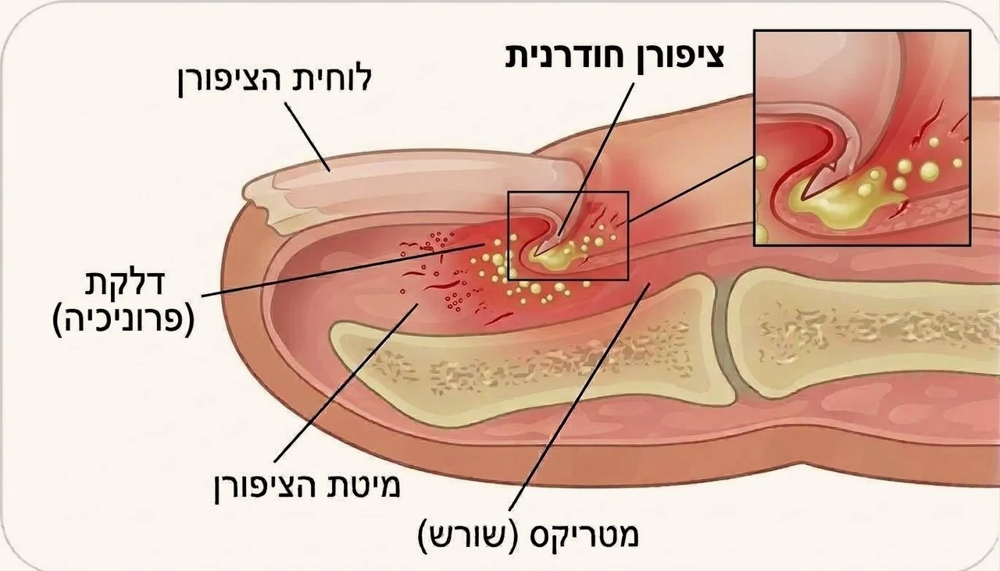
חתך של ציפורן שנכנסת לתוך העור שלצידה
רקעמה בעצם קורה שם כשיש לך ציפורן חודרנית?
ציפורן חודרנית היא לא ציפורן שגדלה "עקום". זו ציפורן שנלחצת מהצדדים, והשפה שלה נכנסת אל תוך העור הרך שלידה.
ולמה זה כל כך כואב לך? כי הציפורן פשוט פוצעת את העור הרך מבפנים. הלחץ והשפשוף התמידיים יוצרים גירוי חזק, ולכן האזור הופך לאדום ונפוח, אפילו אם עוד לא התפתח שם זיהום.
אז מאיפה הלחץ הזה מגיע?כמעט תמיד מנעליים: נעל צמודה מדי, נעל מחודדת בקצה, או נעל חדשה שעדיין לא נוחה לך. הלחץ שמגיע מהצד פשוט דוחף את שפת הציפורן פנימה אל תוך העור.
לפעמים מהציפורן עצמהיש ציפורניים שהמבנה הטבעי שלהן מקומר יותר, ולכן הן נכנסות לעור הרבה יותר בקלות. חשוב לי להרגיע אותך – זה לא משהו שעשית, וזה בהחלט משהו שאפשר לטפל בו.
ולפעמים מפטרת בתעלותפטרייה שמתיישבת בצידי הציפורן גורמת לה להתעבות ולהתעוות, וכך הציפורן נכנסת אל תוך הבשר. זה אחד המצבים שאני פוגשת הכי הרבה, וזו בדיוק הסיבה שבטיפול אצלי אני תמיד בודקת גם את התעלות, ולא רק את קצה הציפורן.
גם ממכה או שפשוףמספיקה מכה חד-פעמית באצבע, בעיטה בכדור, ריצה, או שפשוף שחוזר על עצמו. הרבה פעמים מדובר בחבלה כל כך קטנה שאפילו קשה לזכור שקרתה, אבל הלחץ שלה מספיק כדי לדחוף את הציפורן לתוך העור.
זיהויאיך זה נראה באמת, מהקל אל הקשה
אלה השלבים שאני פוגשת יום-יום בקליניקה. רוב מי שמגיע אליי מזהה את עצמו מיד באחד מהם. הכלל כאן הוא פשוט: ככל שמגיעים אליי מוקדם יותר, כך הדרך להקלה ולריפוי קצרה יותר.
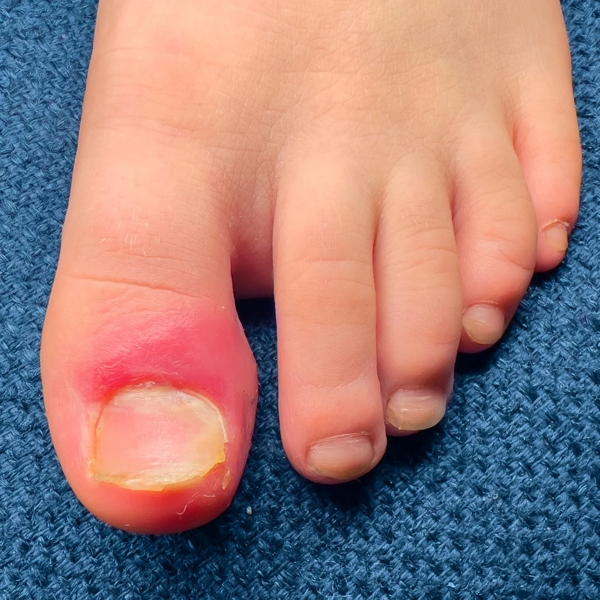
דלקת ראשוניתהשפה אדומה ונפוחה, כואב בלחיצה או בתוך הנעל, ועדיין אין הפרשה. זה השלב שהכי קל לטפל בו
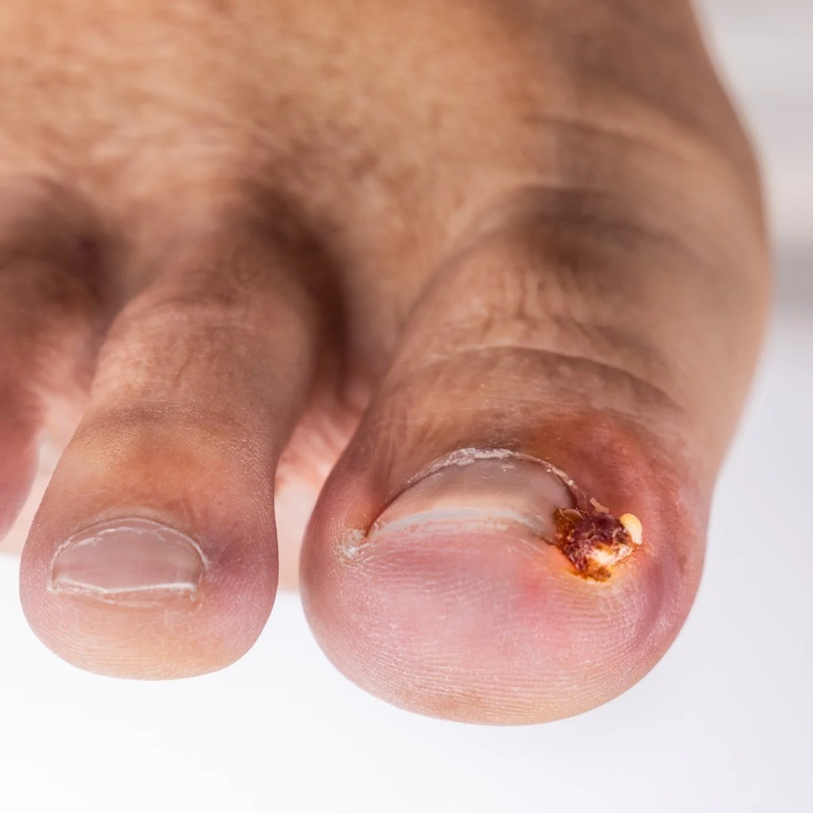
דלקת עם הפרשההשפה כבר מפרישה, ונוצר גלד קטן בפינה. הכאב מורגש גם בלי לגעת, ובדרך כלל גם בנעל
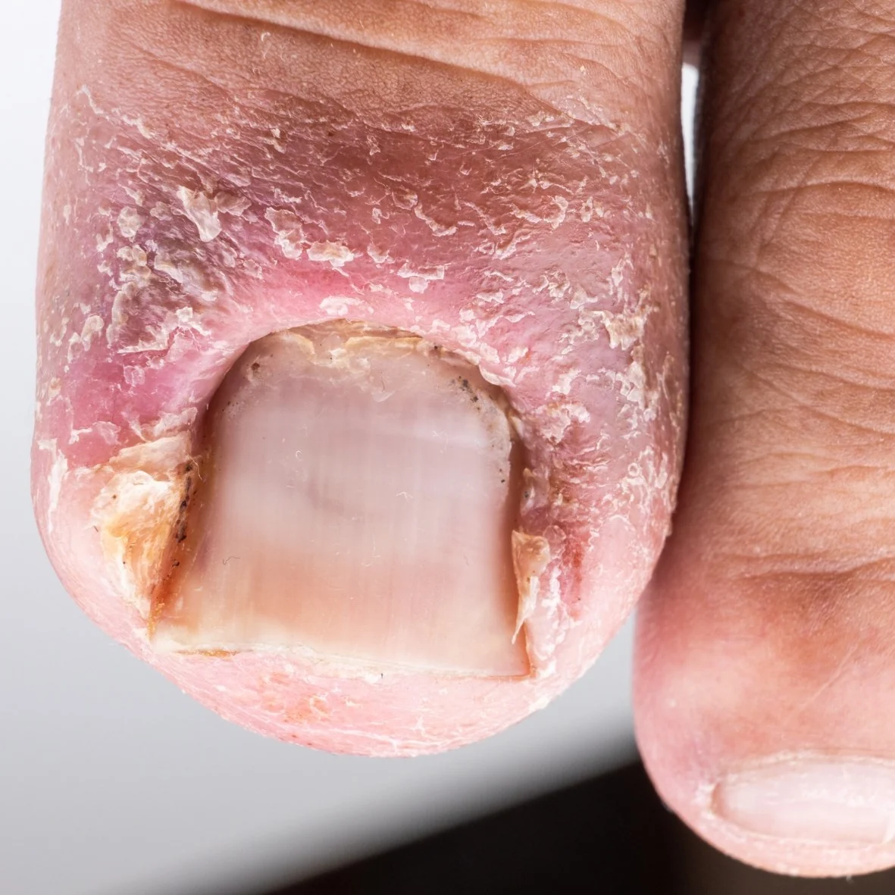
כששתי השפות נכנסותלא צד אחד אלא שניהם. הציפורן שקועה משני הצדדים, והעור סביבה נפוח ומתקלף
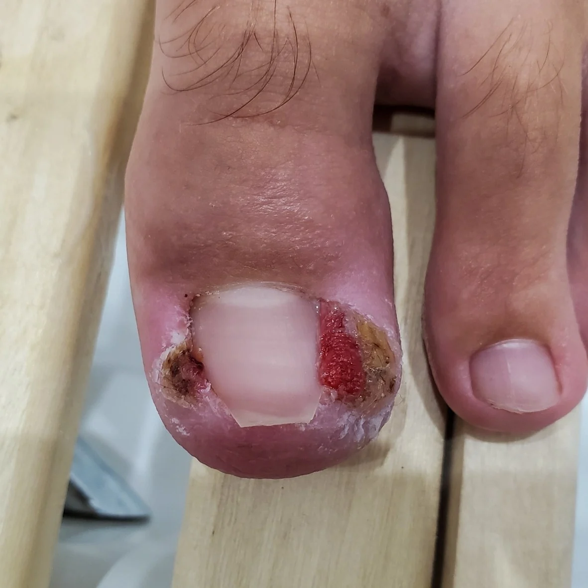
רקמה שגדלה על השפהרקמה אדומה שצומחת מעל הציפורן ומכסה אותה. זה המצב המתקדם, והוא עדיין בר טיפול
רוב מה שגורם לציפורן חודרנית נובע מדברים שאנחנו עושים ביומיום בלי לשים לב. אלה הדברים שאני מבקשת מכל מי שמגיע אליי לקליניקה ליישם, וגם ממי שעוד לא סבל מהבעיה:
לגזור ישר, בזווית של 90 מעלותזו הנקודה הכי חשובה. הגזירה צריכה להיות בקו ישר לרוחב הציפורן, בלי לעגל ובלי לחפור בפינות. הציפורן צריכה להישאר מעט מעבר לקצה האצבע, ולא להיות קצרה ממנו.
להשאיר את הפינה החדה בשקטזו הפינה שכולם תמיד רוצים להוריד, אבל היא בדיוק מה שמגן עליך. היא עוברת את קצה העור, וכך הציפורן שצומחת אחריה גדלה מעל העור ולא לתוכו. אם תשייפי או תגזרי אותה, את פשוט מורידה לעצמך את ההגנה.
העיגול הוא בדיוק מה שמכניס אותה לבשרכמעט כולם מעגלים פינות מתוך מחשבה שזה ימנע מהציפורן להיכנס לעור, אבל ההפך הוא הנכון. כשמעגלים, הפינה נחתכת פנימה מתחת לעור, והציפורן שצומחת אחריה גדלה ישר לתוך הבשר במקום מעליו. אם עשית את זה עד היום, את בחברה טובה, אבל בדיוק בשביל זה אנחנו כאן – כדי לתקן.
לנעול נעליים בגודל הנכון, ובלי שפיץ בקצהנעל צמודה מדי, מחודדת בקצה, או נעל חדשה שעדיין לא נוחה לך – לוחצות על האצבעות מהצדדים, והלחץ הזה דוחף את הציפורן פנימה. אם החלפת נעליים לאחרונה והתחיל לכאוב לך, שווה לבדוק קודם כל את הנעל.
למי שמשרת (הנעל הצבאית)מגיעים אליי המון חיילים וחיילות עם ציפורן חודרנית, וזה לא במקרה. הנעל הצבאית סגורה, קשיחה ונעולה שעות ארוכות, והיא משלבת לחץ מהצדדים עם חבלה חוזרת על אותה אצבע. אם את לפני גיוס – זה בדיוק הזמן לסדר את הציפורניים.
לוותר על לק ג'ל ברגלייםלק ג'ל מתקשה במנורה, ובזמן ההתקשות הוא ממש מתכווץ ולוחץ על הציפורן מלמעלה. הלחץ הזה, יחד עם נעל סגורה, הוא מתכון בטוח לציפורן חודרנית. מעבר לזה, הג'ל גם מחליש את הציפורן וכולא תחתיה לחות, מה שעלול להוביל מהר מאוד לפטרת.
לתת לרגליים להתאוורר, במיוחד למי שמזיעבמיוחד אם את נוטה להזיע. הזיעה מרככת את הציפורן והעור שסביבה, וציפורן רכה נכנסת לעור הרבה יותר בקלות. כדאי לגרוב גרביים מחומר נושם, להוריד נעליים כשנכנסים הביתה ולתת לרגליים קצת אוויר.
ולא להזניח פטרת, גם כשהיא נראית קטנהפטרת בתעלות גורמת לעיוות של הציפורן, וציפורן מעוותת נכנסת ישר לתוך הבשר. טיפול נכון בפטרת הוא גם הדרך שלך למנוע ציפורן חודרנית.
ובצד השנימה ממש לא נכון לעשות
לא לעגל את הפינות, ולא לחפור בהןזו הטעות שמביאה אליי הכי הרבה אנשים. גוזז ציפורניים שנכנס מתחת לשפת הציפורן משאיר שם חתיכה קטנה, והיא זו שתמשיך לחדור לך לעור ולכאוב.
לא לחתוך את הציפורן קצרה מדיציפורן קצרה מדי גורמת לעור שסביבה להתקפל מעליה. התוצאה היא שהציפורן שצומחת אחריה פוגשת עור במקום אוויר, ושוב – נכנסת פנימה.
לא לנסות לחלץ את הציפורן לבדניסיון להשתמש במחט, פינצטה, קצה מספריים או סתם בציפורן אולי מרגיש לך כמו פתרון מיידי, אבל ברוב המקרים זה רק דוחף את השפה של הציפורן עמוק יותר פנימה, ומוסיף לך פצע כואב על הדרך.
לא לדחוף צמר גפן מתחת לציפורן בביתאני יודעת שזה טיפ שמסתובב המון ברשת. אצלי בקליניקה באמת יש לזה מקום ושיטה מקצועית, אבל כשאת מנסה לעשות את זה לבד בבית, זה בדרך כלל רק דוחף את הציפורן פנימה ומוסיף עוד לחץ מיותר.
ולא לחכות שזה יעבור מעצמוציפורן חודרנית פשוט לא נסוגה לבד. היא תמשיך לצמוח לאותו כיוון בעייתי, ומצב שהיה קל בהתחלה יהפוך מהר מאוד לדלקת חריפה. ככל שתגיעי אליי מוקדם יותר, כך הטיפול שאתאים לך יהיה קצר ופשוט הרבה יותר.
אמבט של מי מלח, כשכבר יש דלקתמים פושרים עם מלח, לכמה דקות. זה מרגיע את האזור ומוריד קצת מהנפיחות עד שנפגשות. אני מבקשת את זה גם לפני שמגיעים אליי לטיפול.
ולהוריד את הלחץ מהאצבענעל פתוחה או רחבה יותר בימים האלה, וגרב שלא לוחצת. כל שעה שהציפורן לא נדחפת פנימה היא שעה שעוזרת.
אבל שיהיה ברור: זה מרגיע, לא מטפלהאמבט לא מוציא את הציפורן מהעור, והדלקת לא נעלמת לבד. זה מה שעושים בדרך אליי, ולא במקום.
חלק ב׳מה במבנה של כף הרגל שלך מביא את זה?
כול להיות שאת מקפידה לגזור את הציפורניים נכון, נועלת נעליים מצוינות, ובכל זאת הציפורן החודרנית חוזרת שוב ושוב. במקרים כאלה, חשוב לי שתדעי שהסיבה לרוב בכלל לא יושבת בציפורן עצמה, אלא קשורה למבנה הטבעי של כף הרגל שלך.
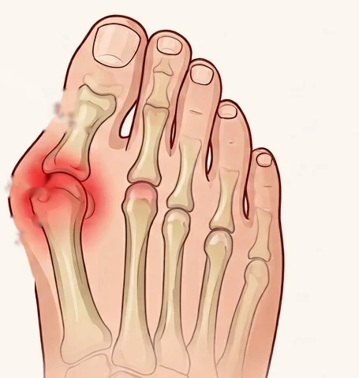
אלוקס ולגוס, עיוות העצםהבוהן נוטה לכיוון שאר האצבעות, והאצבעות נדחסות זו לזו. הלחץ מהצד הוא שדוחף את שפת הציפורן אל תוך העור
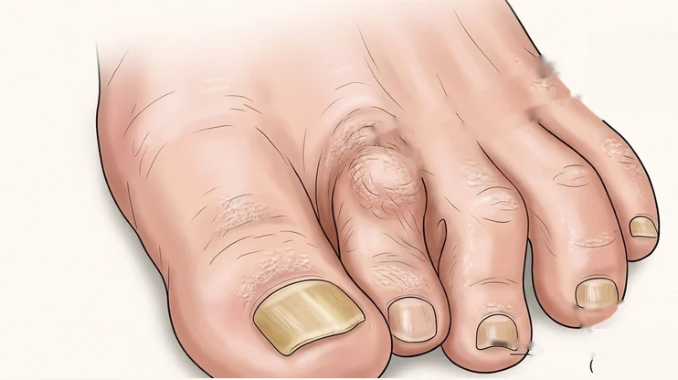
אצבע פטישאצבע שמתכופפת במפרק ונשארת כפופה. היא לוחצת על השכנה שלה, והציפורן שנלחצת מקבלת את זה בכל צעד
מבנה כף הרגל שלך הוא סיבה בפני עצמה, ולא רק מראהכשהאצבעות שלך נדחסות זו לזו, נוצר לחץ קבוע (שלפעמים אפילו לא מורגש) על שפת הציפורן. בגלל זה יש אנשים שהציפורן החודרנית חוזרת אצלם שוב ושוב, בלי שהם עושים שום דבר לא נכון.
ולכן אני בודקת את הנעליים ואת הגרביים שלך בקליניקהכשהחודרנית חוזרת, אני אבקש לראות את הנעליים והגרביים שאת הולכת איתם ביומיום. הרבה פעמים אנחנו נגלה שמקור הבעיה מסתתר בדיוק שם, ולא בציפורן עצמה.
הפתרוןאורטונקסיה, יישור של ציפורן
אורטונקסיה זה ממש כמו אורתודנטיה, רק לציפורן שלך. בדיוק כמו שיישור שיניים מזיז את השן למקום הנכון לאורך זמן, הגשר שניישם מיישר את הציפורן ומרים את השפה שנכנסה לתוך העור. אז בואי נעבור על זה יחד, שלב אחרי שלב.
כשאת מגיעה אליי לקליניקה
כשאת מגיעה אליי לקליניקה במושב, קודם כל מתיישבים על כיסא נוח, אפשר גם לשתות קפה או תה ולהירגע. אני בודקת בעדינות את הציפורן שלך, את העור שסביבה ואת התעלות, ומשתפת אותך בשקיפות בדיוק במה שאני רואה ובמה שאנחנו הולכות לעשות יחד.
משחררים את מה שנכנס פנימה
לפני שאפשר ליישר, אנחנו צריכות לשחרר את שפת הציפורן מהעור שנסגר עליה. וכאן חשוב לי להגיד לך את האמת: זה החלק שיכול לכאוב, פשוט כי לפעמים הציפורן ממש דבוקה לעור בתוך התעלה. אבל זה כאב קצר של כמה שניות וזה מאחורינו, ואני מבטיחה לעבוד הכי עדין שאפשר כדי שתרגישי כמה שפחות.
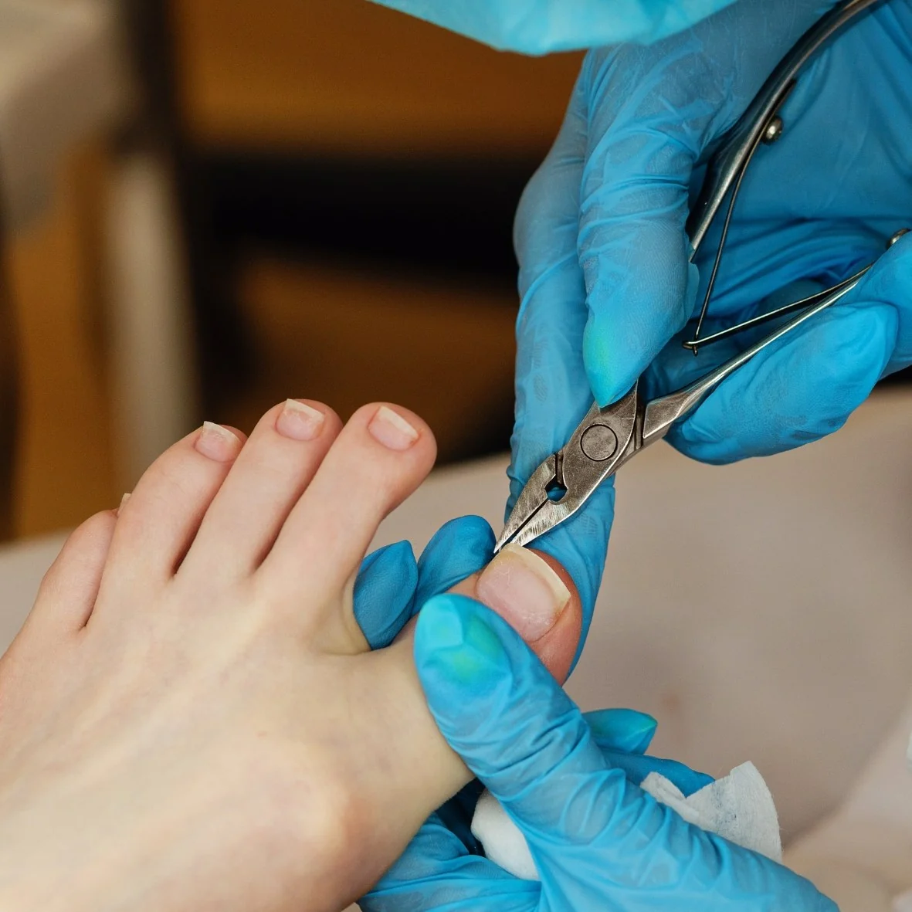
כך אני משחררת את השפה מהעורהגשר המיישר
עכשיו מגיע החלק המיישר. אני מתקינה על הציפורן שלך גשר קטן, שמושך את השפות כלפי מעלה ומוציא אותן מתוך העור. יש לי כמה סוגים של גשרים – למשל אחד שמודבק מלמעלה ואחד שעשוי מחוט טיטניום – ואני אבחר ואתאים בדיוק את מה שנכון לציפורן שלך. את הגשר הזה אולי רואים, אבל חשוב שתדעי שאת ממש לא תרגישי אותו בכלל, והוא לא כואב.
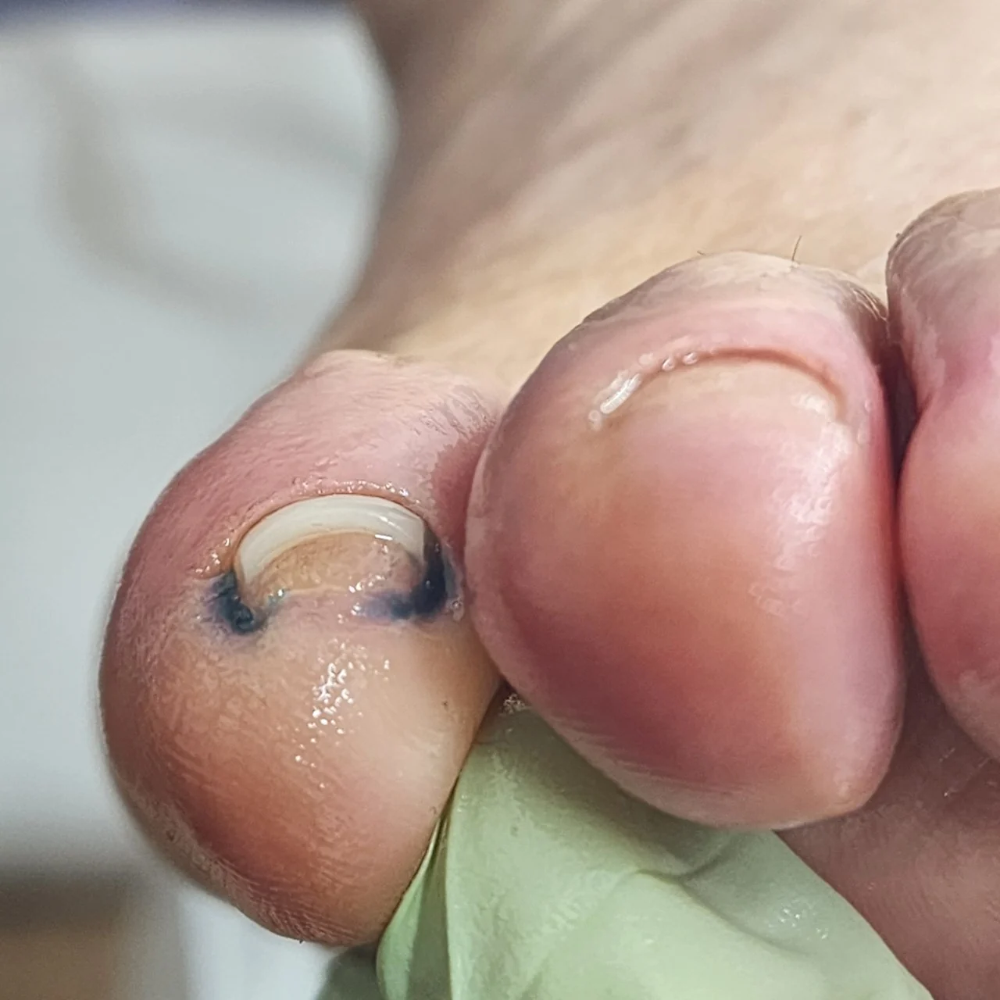
הגשר במקומו, מיד אחרי ההתקנה
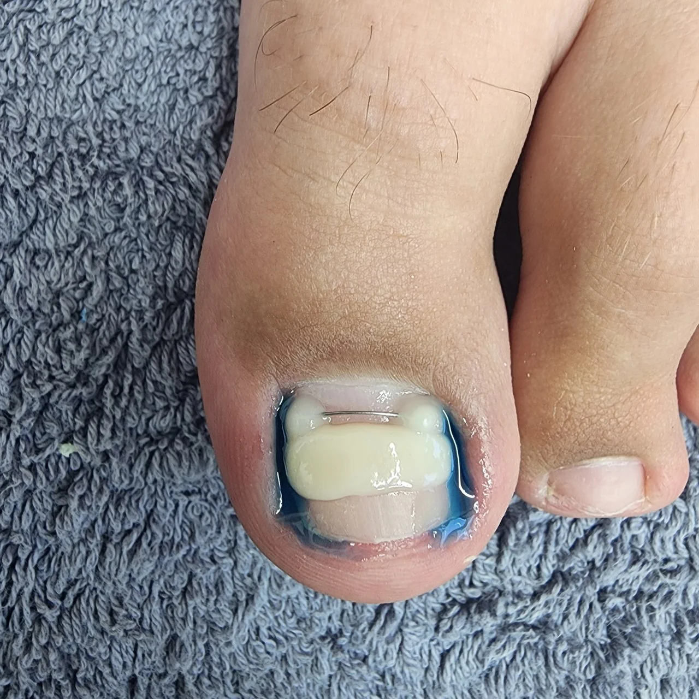
סוג אחר של גשר, על בוהן אחרת
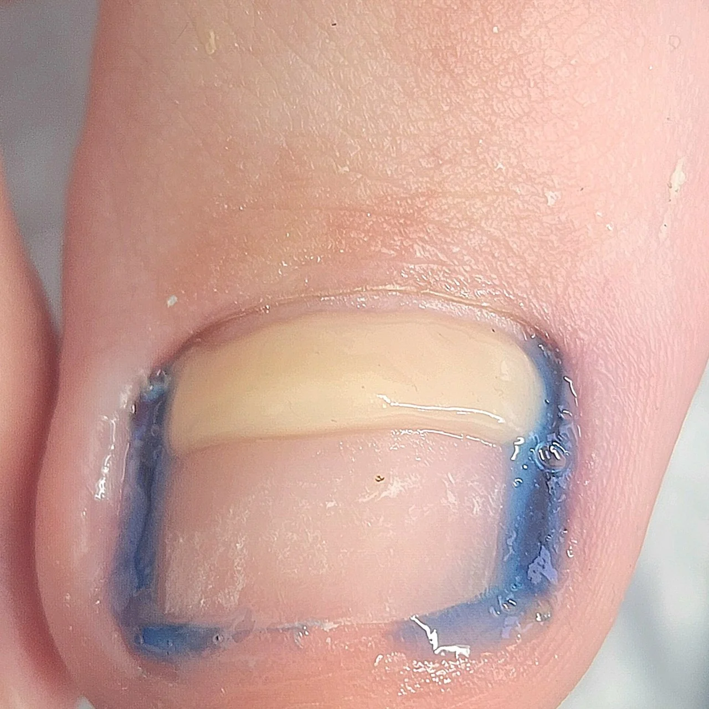
ומקרוב, הגשר יושב על שתי שפות הציפורן ומרים אותן
ומכאן זה כבר עובד לבד. רוב האנשים מפסיקים לסבול מהחודרנית כבר במהלך הטיפול עצמו, וזה החלק הכי חשוב – ההקלה לא מחכה לסוף. את חוזרת אליי רק כשהגשר מגיע לקצה הציפורן וצריך להחליף אותו, ולא לפי תאריך קבוע מראש.
חשוב לי להגיד לך את זה בהכי כנות: יישור ציפורן לוקח בין שנה לשנה וחצי. אני יודעת שזה נשמע המון זמן, אבל יש לזה סיבה פשוטה – זה בדיוק הזמן שלוקח לציפורן שלך להתחלף לגמרי, מהשורש ועד הקצה. אבל הבשורה הטובה היא שאין כאן טיפול בבית ואין לך מה לזכור. אנחנו שמות את הגשר, את ממשיכה בחיים שלך כרגיל, ובאה רק להחליף אותו כשהוא צומח ומגיע לקצה.
אם הגעת אליי כשיש לך כבר דלקת, יש כמה דברים קטנים ופשוטים שתצטרכי להמשיך לעשות בבית בימים הראשונים. הפעולות האלה הן אלה שיורידו את הדלקת עד הסוף:
לא להרטיב את האזור למשך 24 שעותהיממה הראשונה היא הזמן שבו האזור נסגר ונרגע. לכן, אני מבקשת בלי מקלחת על כף הרגל, בלי ים ובלי בריכה.
למרוח משחת איכטמול 2-3 פעמים ביוםזו בעצם "המשחה השחורה" שאפשר לקנות בסופר-פארם בלי מרשם. היא מרגיעה את העור שסביב הציפורן שלך ומורידה את האדמומיות. מספיק למרוח שכבה דקה על השפה, ממש לא צריך יותר מזה.
להמשיך למרוח בין 3 ל-5 ימים, לפי מצב הדלקתככל שהדלקת שאיתה הגעת הייתה חזקה יותר, נמשיך לכיוון החמישה ימים. כמובן שבסוף הטיפול בקליניקה, אני אגיד לך בדיוק כמה ימים נדרשים למקרה הספציפי שלך.
לשלוח לי תמונה אחרי כמה ימיםמבחינתי זו לא רשות, אלא חלק בלתי נפרד מהטיפול. אני רוצה לראות שהדלקת יורדת ושהכול הולך לכיוון הנכון. את פשוט שולחת לי תמונה לוואטסאפ, ואני שם כדי לענות לך.
ולחזור לגזירה ישרה, מהפעם הראשונהאחרי שהאזור נרגע, הציפורן חוזרת לגדול. הגזירה הישרה היא מה שישמור על מה שהשגנו כאן יחד.
אני אף פעם לא מבטיחה שזה לא כואב בכלל, כי אני תמיד אומרת את האמת. שחרור של ציפורן שממש דבוקה לעור בתוך התעלה יכול לכאוב מעט, אבל מדובר בכאב קצרצר של כמה שניות בודדות. את ההתקנה של הגשר עצמו את כמעט ולא תרגישי. לאורך כל הטיפול אני בודקת איתך שהכול בסדר, ואם אני מרגישה שכואב לך – אני מיד מורידה הילוך. אני אף פעם לא שוכחת שיש בן אדם מאחורי הרגל הזו שאני מטפלת בה.
את עובדת עם סכין?
הסכין שהרבה אנשים מפחדים ממנה, זו שמשמשת לגילוח עור – פשוט לא קיימת אצלי בקליניקה בכלל. הכלים שאני עובדת איתם הם ראשי שיוף, צבתית (ניפר) ועוד כלי שיוף עדינים. יש לי רק סכין קטנטן אחד שנועד אך ורק כדי לשחרר בעדינות את הציפורן החודרנית מהעור. אני עובדת איתו בשיא העדינות, ורוב המטופלות שלי בקושי שמות לב שהוא שם.
איך אני יכולה להיות בטוחה שהכול נקי?
כל הציוד שאני משתמשת בו עובר תהליך קפדני של חיטוי ועיקור מלא, ואני תמיד אראה לך את המעטפה הסגורה לפני שאפתח אותה מולך. את מקבלת מגבות נקיות וחדשות, אני שמה כפפות חדשות, ויש חיטוי יסודי של כל העמדה והכיסא בין כל מטופלת למטופלת.
אפשר פשוט להסיר את הציפורן ולגמור עם זה לתמיד?
המון מטופלות מגיעות אליי אחרי שהן כבר עברו הסרה כירורגית של הציפורן, והחודרנית פשוט חזרה. הסיבה היא שהסרה של הציפורן לא באמת מטפלת בסביבה, וכשהציפורן תצמח מחדש, היא שוב תפגוש את אותו העור ואותו הלחץ. יישור הציפורן (אורטונקסיה) עובד אחרת: הוא מיישר את הציפורן ומשנה את כיוון הצמיחה שלה, ולכן התוצאה באמת נשמרת.
רואים את הגשר? ומרגישים אותו?
רואים אותו, אבל את ממש לא תרגישי אותו בכלל. יש לי כמה סוגים של גשרים: אחד שמודבק על הציפורן מלמעלה, ואחד שעשוי מחוט טיטניום. שניהם קטנים, שניהם נראים לעין, ושניהם לחלוטין לא כואבים. אני אבחר ואתאים במדויק את הסוג שנכון לציפורן שלך, ואסביר לך למה בחרתי דווקא בו.
המשחה השחורה – איפה אני קונה אותה?
למשחה קוראים "משחת איכטמול", ואת יכולה לקנות אותה בקלות בסופר-פארם בלי מרשם רופא או בכל בית מרקחת אחר. בסיום הטיפול, אני אגיד לך בדיוק לכמה ימים תצטרכי למרוח אותה בהתאם למצב שלך.
ומה לגבי לק או לק ג'ל על הרגליים?
אני אבקש ממך לוותר על זה בתקופת הטיפול, ובמיוחד לא לשים לק ג'ל. כשלק ג'ל מתקשה במנורה הוא מתכווץ ולוחץ על הציפורן מלמעלה, וזה קורה בדיוק בזמן שאנחנו עושות הכול כדי להוריד ממנה את הלחץ.
חשוב לדעתמתי לא לחכות ולהגיע
כשיש אודם, נפיחות או הפרשה סביב הציפורןזה סימן שהאזור כבר מודלק, וזה בדיוק המצב שרק הולך ומחמיר כשמחכים. ככל שתגיעי אליי מוקדם יותר, ככה הטיפול שאתאים לך יהיה קצר ופשוט יותר.
כשכואב בהליכה או בתוך הנעלכשכל צעד שאת עושה מזכיר לך שהציפורן שם וכואבת, את כבר בשלב שזה לא יעבור מעצמו.
כשאת רואה שגדלה רקמה על שפת הציפורןעור שמתנפח ומתעבה מעל הציפורן מסמן שלב מתקדם יותר, אבל חשוב לי שתרגעי – זה לחלוטין בר טיפול. פשוט אל תחכי עם זה יותר.
כשעברת כבר טיפול קודם והבעיה חזרהציפורן חודרנית שחוזרת אחרי טיפול זה דבר נפוץ ומוכר, וזה ממש לא אומר שאין מה לעשות. זה פשוט אומר שהפעם אנחנו צריכות לטפל גם בסביבה של הציפורן, ולא רק בציפורן עצמה.
ותמיד, אם יש לך סוכרת או בעיה בזרימת הדםבמצב כזה את לא מנסה שום דבר לבד בבית, גם אם זה נראה לך כמו משהו קטן. את פשוט מגיעה, אני בודקת בעדינות, ואם יש צורך – אפנה אותך לרופא. הכלל אצלי בקליניקה ברור: כשיש ספק, אין ספק.